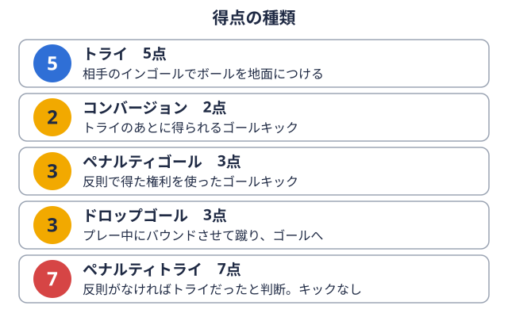

観戦ガイド 2026-11-03
大学ラグビー春季大会2026の結果まとめ｜関東A〜Cグループと関西春季トーナメント
春の大学ラグビーの結果は、試合ごとのハイライト動画では見つかっても、グループ全体のスコアと順位を文字でまとめて確認できるページは多くありません。この記事では、2026年の関東大学春季大会（A・B・Cの3グループ）と関西大学春季トーナメントについて、全試合のスコアと最終順位を1ページにまとめました。
内容は関東ラグビーフットボール協会と関西ラグビーフットボール協会の公式結果ページ（2026年11月3日時点で確認）をもとにしています。九州の大学春季の結果と、全国大学選手権・ジュニア選手権は本記事の対象外です。なお、関東の大会はJ SPORTSの中継では「関東大学春季交流大会」の名称も使われていますが、本記事では協会の表記に合わせて「関東大学春季大会」と書きます。
結論：関東は早稲田・帝京・立教、関西は京都産業大が1位
まず、各大会・グループの1位と2位を一覧にします。
| 大会・グループ | 1位 | 成績 | 勝点 | 2位 |
|---|---|---|---|---|
| 関東 Aグループ | 早稲田大 | 5勝0敗 | 29 | 明治大 |
| 関東 Bグループ | 帝京大 | 5勝0敗 | 30 | 慶應義塾大 |
| 関東 Cグループ | 立教大 | 5勝0敗 | 27 | 日本大 |
| 関西 春季トーナメント | 京都産業大 | 1・2位決定戦で天理大に28-24 | － | 天理大 |
関東はA・B・Cのすべてのグループで、1位が5戦全勝でした。関西はトーナメント方式で行われ、最終日の1・2位決定戦で京都産業大が天理大を下しています（関西協会の公式ページにも勝点試合の結果に応じて与えられるポイント。シーズンの合計が多い順に順位が決まる。用語辞典で見るの順位表が掲載されており、京都産業大が1位です）。
関東大学春季大会の仕組み
3グループ×6校の総当たりで、対抗戦とリーグ戦の大学が交わる
関東大学春季大会は、A・B・Cの3グループに6校ずつが入り、グループ内で1回総当たりを行います。各校の試合数は5試合、グループごとの試合数は15試合です。
2026年度の秋の所属は、当サイトのチームページで確認すると次のとおりです。
| グループ | 秋の所属別の大学 |
|---|---|
| A | 対抗戦関東の大学ラグビーの大会区分の一つ。Aグループ・Bグループに分かれて戦う。用語辞典で見るA：早稲田大・明治大・筑波大／リーグ戦関東の大学ラグビーのもう一つの大会区分。1部・2部など「部」に分かれて戦う。用語辞典で見る1部：東海大・東洋大・関東学院大 |
| B | 対抗戦A：帝京大・慶應義塾大・日本体育大／リーグ戦1部：流通経済大・立正大・法政大 |
| C | 対抗戦A：青山学院大・立教大／対抗戦B：武蔵大／リーグ戦1部：日本大・専修大／リーグ戦2部：大東文化大 |
どのグループにも、対抗戦とリーグ戦の大学が混在しています。秋のシーズンでは別々のリーグで戦う大学同士が、春には同じグループで対戦するのが、この大会の特徴です。グループ分けの基準は今回の確認では分かりませんでしたので、組分けの基準は協会の大会要項等でご確認ください。
勝点は勝5・分3・負1にボーナス点
星取表ページに記載されている勝点のルールは次のとおりです。
- 勝ち：5点、引き分け：3点、負け：1点
- 不戦勝：6点、不戦敗：0点、不成立：3点
- ボーナス点：7点差以内の負けなら勝点1、3トライ相手のインゴール（ゴールの奥のエリア）で、ボールを地面につける得点。5点。

用語辞典で見る差以上での勝ちなら勝点1
勝点が並んだ場合は、次の順で順位を決めます。
- 全試合の勝利数
- 当該チーム同士の勝点
- 当該チーム同士の得失点差
- 総得失点差
- 総トライ数
- トライ後のゴール数
- 抽選
勝点やボーナスポイント勝敗とは別に、大差の勝利や僅差の敗戦などで加わる勝ち点。条件は大会ごとに決まっている。用語辞典で見るの基本的な考え方は、順位はどう決まる？勝ち点とボーナスポイントで解説しています。
Aグループの結果：早稲田大が5戦全勝
最終順位
2026年6月28日更新の星取表をもとにした最終順位です。総得点・総失点は、全試合スコアから編集部が集計しました。
| 順位 | 大学 | 勝敗 | 勝点 | 総得点 | 総失点 |
|---|---|---|---|---|---|
| 1 | 早稲田大 | 5勝0敗 | 29 | 260 | 106 |
| 2 | 明治大 | 4勝1敗 | 24 | 237 | 89 |
| 3 | 筑波大 | 3勝2敗 | 20 | 180 | 111 |
| 4 | 東海大 | 2勝3敗 | 15 | 190 | 196 |
| 5 | 東洋大 | 1勝4敗 | 10 | 95 | 202 |
| 6 | 関東学院大 | 0勝5敗 | 5 | 87 | 345 |
勝敗が成績順にきれいに並んだグループです。明治大は総失点89がグループで最少で、1敗しながら2位に入っています。
全15試合のスコア
| 日付 | 対戦 | スコア | 会場 |
|---|---|---|---|
| 4/26 | 早稲田大 対 筑波大 | 45-12 | 早稲田大G |
| 4/26 | 関東学院大 対 東洋大 | 26-57 | 東洋大G |
| 5/3 | 明治大 対 東洋大 | 26-17 | 熊谷 |
| 5/10 | 明治大 対 関東学院大 | 114-0 | 小田原 |
| 5/10 | 東海大 対 筑波大 | 19-57 | 東海大G |
| 5/17 | 東海大 対 早稲田大 | 42-59 | 小田原 |
| 5/24 | 早稲田大 対 東洋大 | 67-14 | 早稲田大G |
| 5/24 | 筑波大 対 関東学院大 | 38-19 | 筑波大G |
| 5/31 | 明治大 対 東海大 | 45-27 | エコパ |
| 6/7 | 東洋大 対 筑波大 | 0-56 | 東洋大G |
| 6/7 | 早稲田大 対 明治大 | 28-24 | ミクスタ |
| 6/7 | 東海大 対 関東学院大 | 75-28 | 東海大G |
| 6/14 | 東洋大 対 東海大 | 7-27 | 東洋大G |
| 6/21 | 関東学院大 対 早稲田大 | 14-61 | 関東学院大G |
| 6/28 | 筑波大 対 明治大 | 17-28 | 筑波大G |
スコアは左に書いたチームの得点が先です。会場名は公式ページの表記に従っています。
見どころ
勝点上位の2校が直接対戦したのが、6月7日にミクスタで行われた早稲田大28-24明治大です。5戦全勝の早稲田大と1敗の明治大を分けたのは、この4点差の試合でした。
明治大は5月10日の小田原で関東学院大に114-0と大きく勝っています。全試合スコアから編集部が見ると、この114点はAグループの15試合で最多の得点でした。
早稲田大学競技スポーツセンターの記事は、6月21日の関東学院大戦（61-14）で全試合に勝利し、「史上初の春季大会優勝が決まった」と伝えています。
各校の詳しい情報は、早稲田大学のチームページ、明治大学のチームページ、東海大学のチームページで確認できます。
Bグループの結果：帝京大が5試合で失点26
最終順位
2026年6月21日更新の星取表をもとにした最終順位です。総得点・総失点は、全試合スコアから編集部が集計しました。
| 順位 | 大学 | 勝敗 | 勝点 | 総得点 | 総失点 |
|---|---|---|---|---|---|
| 1 | 帝京大 | 5勝0敗 | 30 | 386 | 26 |
| 2 | 慶應義塾大 | 4勝1敗 | 24 | 156 | 109 |
| 3 | 法政大 | 2勝3敗 | 16 | 135 | 171 |
| 4 | 流通経済大 | 2勝3敗 | 15 | 146 | 168 |
| 5 | 日本体育大 | 1勝4敗 | 9 | 61 | 272 |
| 6 | 立正大 | 1勝4敗 | 9 | 86 | 224 |
帝京大は5試合の合計得点が386、合計失点が26でした。上位2校と下位との間で、勝点の開きが大きいグループです。
全15試合のスコア
| 日付 | 対戦 | スコア | 会場 |
|---|---|---|---|
| 4/19 | 帝京大 対 日本体育大 | 91-0 | 帝京大G |
| 4/25 | 日本体育大 対 慶應義塾大 | 19-45 | 慶應義塾大G |
| 4/26 | 流通経済大 対 立正大 | 40-26 | 流通経済大第1G |
| 4/26 | 帝京大 対 法政大 | 88-0 | 帝京大G |
| 5/3 | 慶應義塾大 対 流通経済大 | 31-5 | 慶應義塾大G |
| 5/10 | 帝京大 対 立正大 | 87-14 | 帝京大G |
| 5/17 | 法政大 対 日本体育大 | 61-7 | 法政大G |
| 5/17 | 流通経済大 対 帝京大 | 12-64 | 流通経済大第1G |
| 5/24 | 日本体育大 対 立正大 | 21-12 | 日本体育大G |
| 6/6 | 立正大 対 慶應義塾大 | 10-54 | 立正大G |
| 6/7 | 法政大 対 流通経済大 | 33-26 | 法政大G |
| 6/14 | 慶應義塾大 対 法政大 | 26-19 | 慶應義塾大G |
| 6/21 | 流通経済大 対 日本体育大 | 63-14 | 流通経済大第1G |
| 6/21 | 慶應義塾大 対 帝京大 | 0-56 | 慶應義塾大G |
| 6/21 | 立正大 対 法政大 | 24-22 | 立正大G |
見どころ
帝京大の5試合の失点は合計26で、そのうち3試合は無失点でした。日本体育大に91-0、法政大に88-0、慶應義塾大に56-0という結果です。残る2試合は、立正大戦の87-14と流通経済大戦の64-12でした。
3位の法政大と4位の流通経済大は、ともに2勝3敗で勝点の差は1です。両校の直接対決は、法政大が33-26で勝っています。
日本体育大と立正大は、どちらも1勝4敗の勝点9で並びました。ここで使われたのが前章の順位決定ルールです。勝利数も同じだったため、当該チーム同士の勝点で比べ、5月24日の直接対決で21-12と勝った日本体育大が上位になっています。ルールが実際の順位に反映された例として、見ておく価値があります。
チーム情報は帝京大学のチームページ、慶應義塾大学のチームページ、法政大学のチームページからどうぞ。
Cグループの結果：立教大が僅差を勝ち切って5戦全勝
最終順位
2026年6月21日更新の星取表をもとにした最終順位です。総得点・総失点は、全試合スコアから編集部が集計しました。
| 順位 | 大学 | 勝敗 | 勝点 | 総得点 | 総失点 |
|---|---|---|---|---|---|
| 1 | 立教大 | 5勝0敗 | 27 | 203 | 98 |
| 2 | 日本大 | 4勝1敗 | 25 | 226 | 121 |
| 3 | 専修大 | 3勝2敗 | 20 | 172 | 120 |
| 4 | 大東文化大 | 2勝3敗 | 16 | 226 | 195 |
| 5 | 青山学院大 | 1勝4敗 | 11 | 118 | 155 |
| 6 | 武蔵大 | 0勝5敗 | 5 | 114 | 370 |
立教大と日本大の勝点の差は2です。総得点は日本大が226、立教大が203と、得点の多さと順位が一致していない点が目を引きます。
全15試合のスコア
| 日付 | 対戦 | スコア | 会場 |
|---|---|---|---|
| 4/26 | 青山学院大 対 大東文化大 | 17-36 | 青山学院大G |
| 4/26 | 日本大 対 専修大 | 34-24 | 日本大G |
| 4/26 | 立教大 対 武蔵大 | 81-12 | 武蔵大G |
| 5/9 | 青山学院大 対 専修大 | 14-35 | 青山学院大G |
| 5/10 | 日本大 対 立教大 | 17-19 | 日本大G |
| 5/10 | 大東文化大 対 武蔵大 | 102-35 | 大東文化大G |
| 5/23 | 専修大 対 武蔵大 | 59-19 | 専修大G |
| 5/24 | 日本大 対 青山学院大 | 41-28 | 日本大G |
| 5/24 | 立教大 対 大東文化大 | 60-33 | 大東文化大G |
| 6/6 | 専修大 対 立教大 | 24-27 | 専修大G |
| 6/7 | 大東文化大 対 日本大 | 29-53 | 大東文化大G |
| 6/7 | 武蔵大 対 青山学院大 | 27-47 | 武蔵大G |
| 6/21 | 青山学院大 対 立教大 | 12-16 | 青山学院大G |
| 6/21 | 専修大 対 大東文化大 | 30-26 | 専修大G |
| 6/21 | 武蔵大 対 日本大 | 21-81 | 武蔵大G |
見どころ
立教大の5勝のうち、日本大（19-17）、専修大（27-24）、青山学院大（16-12）との3試合は、いずれも4点差以内の勝利でした。全勝の内訳に、接戦を勝ち切った試合が多く含まれています。
日本大は5月10日に立教大へ17-19で敗れましたが、総得点226は大東文化大と並んでグループ最多でした。大東文化大は5月10日に武蔵大へ102-35で大勝した試合もありました。
チーム情報は立教大学のチームページと日本大学のチームページで確認できます。
関西大学春季トーナメントの結果：京都産業大が1位
関西ラグビーフットボール協会の「関西大学春季トーナメント」には、摂南大・朝日大・大阪体育大・関西大・近畿大・IPU環太平洋大・龍谷大・立命館大・天理大・同志社大・関西学院大・京都産業大の12チームが参加しました。5月10日から6月28日まで行われ、最後は順位決定戦です。順位決定戦はいずれも天理親里競技場で行われました。
| 順位決定 | 対戦 | スコア | 日付 |
|---|---|---|---|
| 1・2位決定戦 | 天理大 対 京都産業大 | 24-28 | 6/28 |
| 3・4位決定戦 | 関西大 対 近畿大 | 31-31（引き分け） | 6/28 |
| 5・6位決定戦 | 同志社大 対 関西学院大 | 14-24 | 6/27 |
| 7・8位決定戦 | 朝日大 対 立命館大 | 14-90 | 6/27 |
1・2位決定戦は京都産業大が28-24で勝ち、1位になっています。3・4位決定戦は31-31の引き分けでした。5・6位は関西学院大が、7・8位は立命館大が勝っています。
本記事では順位決定戦のみを扱っています。トーナメントの組み合わせと全20試合のスコアは、関西ラグビーフットボール協会の公式ページでご確認ください。
関西の2校は、京都産業大学のチームページと天理大学のチームページがあります。秋の関西は関西Aリーグの順位表で追えます。天理大学については、天理大学ラグビー部はなぜ強い？もあわせてどうぞ。
春の結果を秋の観戦に生かすには
春の成績が秋にそのまま結びつくとは限りません。一般的には、春季大会は新チームで臨む最初の公式戦のひとつと言われ、メンバー構成も秋と異なる場合があります。そのため、春の順位は秋の順位を約束するものではなく、あくまで一つの材料として見るのが無難です。
そのうえで、結果表を観戦に生かす見方を3つ挙げます。
- 春に同じグループで当たった対抗戦とリーグ戦の大学は、秋は別のリーグで戦うため、入替戦上のグループの下位チームと下のグループの上位チームが戦い、翌シーズンの所属を決める試合。用語辞典で見るや大学選手権などを除けば、秋の公式戦で顔を合わせる機会は限られます。春の対戦は、両リーグの大学を同じ舞台で見比べられる材料のひとつです。
- 僅差の試合とボーナス点の付き方を見ます。7点差以内の負けや3トライ差以上の勝ちには勝点1が加わるため、勝敗が同じでも勝点に差が出る場合があります（Bグループの法政大16と流通経済大15がその例です）。
- 秋の順位表と並べて、春からの変化を追います。順位だけでなく、得点や失点の傾向がどう動くかを見ると楽しめます。
秋の順位表は、関東大学対抗戦Aグループの順位表と関東大学リーグ戦1部の順位表で確認できます。二つのリーグの違いは対抗戦とリーグ戦の違い、過去の優勝校は関東大学ラグビー優勝校の推移、定番の一戦は早明戦の日程にまとめています。
出典
以下の公式ページを、2026年11月3日時点で確認しました。
- 関東ラグビーフットボール協会 大学春季大会 Aグループ 日程・結果
- 関東ラグビーフットボール協会 大学春季大会 Bグループ 日程・結果
- 関東ラグビーフットボール協会 大学春季大会 Cグループ 日程・結果
- 関東ラグビーフットボール協会 大学春季大会 Aグループ 星取表
- 関東ラグビーフットボール協会 大学春季大会 Bグループ 星取表
- 関東ラグビーフットボール協会 大学春季大会 Cグループ 星取表
- 関西ラグビーフットボール協会 関西大学春季トーナメント
- 早稲田大学競技スポーツセンター「ラグビー蹴球部 全試合勝利で優勝を成し遂げる《関東大学春季大会》」
総得点・総失点は、公式ページの全試合スコアから編集部が集計した値です。
この部活・競技を応援したい方へ
取材してほしい部活を募集中
オフシーズン・引退後に、長期インターンという選択
部活で培った力を実務で試す。16タイプ診断（30秒）で合う企業がわかります。